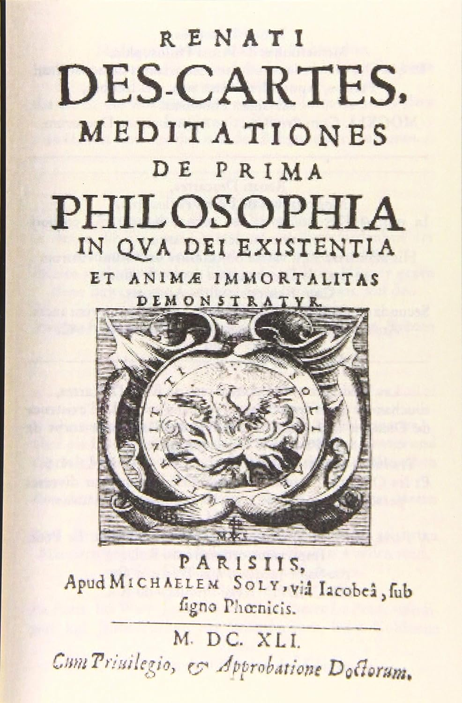

| |
|
Discurso del método (1637), El Discurso del método para dirigir bien la razón y buscar la verdad en las ciencias (tal es su título completo) no es solamente la obra fundamental del filósofo francés René Descartes; ha sido juzgada además como el hito que marca el final de la escolástica y el inicio de la filosofía moderna. El Discurso del método fue publicado anónimamente por primera vez en Leiden en 1637; en aquella primera edición venía a ser el prólogo de los tres tratados científicos contenidos en el libro (La dióptrica, Los meteoros y La geometría), y, de hecho, no se publicó de forma independiente de los tratados hasta el siglo XIX.El Discurso del método consta de un breve prefacio y seis partes. La primera parte se ocupa de la ciencia de su tiempo; hay que observar que, pese a ser una obra filosófica, no carece de elementos autobiográficos, y precisamente en esta primera parte Descartes constata la decepción que le causaron, en general, sus estudios en el colegio de los jesuitas de La Flèche, a excepción de las enseñanzas matemáticas.
Para Descartes, ninguna de las materias que se estudiaban en su tiempo se interesaba en la búsqueda de la verdad. O eran un pasatiempo placentero, como la literatura o la retórica, o bien tenían un fin práctico, como las disciplinas técnicas. Y las diversas filosofías, contradiciéndose unas a otras, mostraban no haber llegado a su objetivo. Sólo las matemáticas, gracias al rigor de su método, presentaban absoluta certeza.
La matemáticas, sin embargo, no se aplicaban a la investigación de lo real. Y esta consideración es la que determina su proyecto filosófico, que no es otro que evitar las especulaciones sin sentido y los razonamientos sin fundamento; en lugar de ello, es preciso encauzar la razón por los deseados caminos del rigor y del buen hacer metodológicos que caracterizan a las matemáticas, disciplina a la que el propio Descartes realizó aportaciones decisivas. De este modo esta primera parte es a un tiempo una autobiografía intelectual y una revisión, con conclusiones deprimentes, de la ciencia de su tiempo.
Informacion
|
|
|
Meditaciones metafísicas, Dedicado a la Facultad de Teología de la Universidad de París, de la que esperaba recibir la aprobación oficial para su filosofía, el libro contiene la exposición más amplia y compleja del pensamiento de René Descartes, cuyos principios habían sido ya divulgados en el célebre Discurso del método (1637). Ya en su primera edición latina, las Meditaciones metafísicas iban seguidas de siete grupos de objeciones dirigidas a sus teorías por teólogos y filósofos de varias tendencias, con las respuestas del autor.
En las dos primeras meditaciones, Descartes adopta la regla de la "duda metódica", ya explicada en el Discurso del método, para hacer tabla rasa de todos los conceptos, como preliminar para una reconstrucción sobre la base intuitiva del dato inmediato de la conciencia: cogito, ergo sum (pienso, luego existo). El hombre es una sustancia pensante, inmaterial, y este conocimiento es una idea clara y distinta inalterable, independiente de lo sensible; de hecho, los cuerpos mismos no son en realidad conocidos con los sentidos ni con la imaginación, sino sólo con el pensamiento, la inteligencia.
A la certidumbre de la existencia real de los objetos exteriores fuera del Yo sólo se llega mediante la demostración de la existencia de Dios, porque las ideas de los cuerpos exteriores y las de las matemáticas no nos garantizan la existencia de los objetos, sino sólo del Yo que los piensa; es menester, pues, invocar el argumento de la veracidad de Dios, que produce en nosotros esas ideas.
Pero ante todo es preciso indagar si hay un Dios, y si es veraz. La premisa necesaria para la investigación es que la perfección objetiva de las ideas debe tener su causa en una realidad de no menor perfección formal. A la idea que poseemos del Ser perfectísimo debemos asignar una causa de igual perfección, esto es, Dios (argumento ideológico); la existencia del hombre no puede depender sino de la misma causa perfectísima que ha puesto en su pensamiento la idea de Dios y de las infinitas perfecciones que le faltan (argumento cosmológico). La idea de Dios es innata; y no podríamos tenerla si Dios no existiese verdaderamente (Meditación tercera).
Informacion
|

|
| Ideas Principales |
|
Intuición y deducción: La intuición, es una percepción directa de las ideas, que excluye toda posibilidad de duda y error. Se trata de una Especie de “luz o instinto natural” que tiene por objeto las naturalezas Simples, por medio de ella captamos inmediatamente conceptos simples emanados De la razón misma. A la simplicidad va unida la perfecta inteligibilidad. En este sentido, en su obra sostiene que la intuición es una representación de la Inteligencia pura tan sumamente clara que no permite duda alguna sobre lo que Comprende. La intuición remite a un Contenido simple, pero no exento de relaciones. Cuando capto la idea de Triángulo, comprendo que es una figura de tres lados, que está compuesta por Tres líneas que se cortan en el mismo plano;
Deducción
Todo el conocimiento intelectual se Despliega, pues, a partir de la intuición de las naturae simplices. Entre unas Intuiciones y otras, aparecen conexiones que la inteligencia descubre y recorre Por medio de la deducción (razonamiento). La deducción (razonamiento) es una Sucesión y conexión de intuiciones de naturae simplices. Se trata, por tanto, De un movimiento continuo del pensamiento que percibe con evidencia cada Naturaleza simple, pero separadamente, una tras otra. Es una intuición sucesiva, Que permite el tránsito de una idea a la siguiente. El razonamiento es una Intuición continuada. La deducción añade a la noción de intuición el ser un “paso” de algo a algo en el entendimiento. Que el paso en cuestión es Necesario, reside en la naturaleza intuitiva de la deducción. En definitiva, la Intuición nos ofrece el conocimiento de los principios y la deducción el de las Consecuencias, a las que no se puede llegar de otro modo. Ahora bien, entre Estos dos modos de conocimiento hay que establecer algunos matices. La Intuición es un acto de la inteligencia pura y nada tiene que ver con la Percepción sensible. Por ser más simple, es más cierta aún que la deducción. De Modo que sus rasgos carácterísticos son la inmediatez y la atemporalidad. Frente a la intuición, la deducción es sucesiva o temporal.
Informcion
|
|
| La existencia de Dios: 1. ARGUMENTO DE LA CAUSALIDAD:
La idea de un ser infinito no pudo haber sido causada por mí mismo, puesto que yo soy un ser finito, sino que debe haber sido causada por un ser cuya realidad formal, o sea, su realidad en acto, sea proporcional a la idea, en suma, por un ser infinito.
2. ARGUMENTO DE DIOS COMO CAUSA DE MI SER:
En mi mente hay una idea de perfección infinita. Si yo fuese la causa de la realidad objetiva de la idea de perfección, mi realidad formal debería ser proporcional a esa idea. En ese caso podría darme a mí mismo la perfección que deseo y que es evidente que no poseo. Por tanto, si poseo la idea de perfección, y no poseo la perfección que pudiera ser su causa, yo no puedo ser la causa de esa idea ni de mi propio ser. De esto se desprende que la causa de mi idea de perfección es alguien tan perfecto, al menos, como la idea de perfección que yo poseo, y que la ha puesto en mí Dios.
3.ARGUMENTO ONTOLÓGICO:
Pretende ser una prueba de la existencia de Dios partiendo de la idea misma de Dios. La existencia es una perfección, por tanto él la posee.
Después de demostrar la existencia de Dios mediante estos 3 argumentos llega a la conclusión de que Dios es garantía de verdad. Una vez demostrada la existencia de Dios y reconocida su naturaleza como la suma de sus perfecciones, puede afirmarse su verdad y veracidad, y así rechazamos la hipótesis del genio maligno engañador.
Informacion
|
|